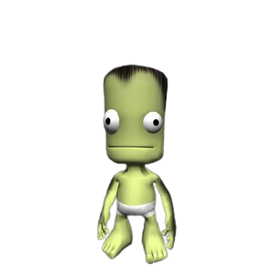
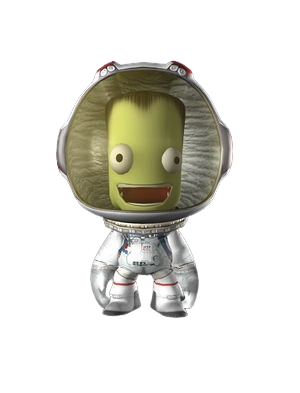

O que é?
Kerbal Space Program (KSP) é um videogame de simulação de vôo
espacial desenvolvido pelo estúdio mexicano Squad para Linux,
macOS, Windows, PlayStation 4, PlayStation 5, Xbox Series X/S
e Xbox One. No jogo, os jogadores dirigem o programa espacial
de uma espécie de alienígenas humanóides verdes conhecidos
como "Kerbals". O jogo apresenta um mecanismo de física
orbital pseudo-realista, permitindo várias manobras orbitais
da vida real, como órbitas de transferência de Hohmann e
encontro orbital.
Em maio de 2017, o Squad anunciou que o jogo havia sido
adquirido pela empresa de videogame Take-Two Interactive, que
ajudará a apoiar o Squad a manter as versões do console
atualizadas junto com as versões para computador pessoal. Uma
Enhanced Edition foi lançada para Xbox One e PlayStation 4 em
janeiro de 2018, e para PlayStation 5 e Xbox Series X/S em
setembro de 2021 pela Private Division, uma subsidiária de
publicação da Take-Two Interactive. Duas expansões para o jogo
foram lançadas como conteúdo para download: Making History em
março de 2018 e Breaking Ground em maio de 2019. Uma
sequência, Kerbal Space Program 2, foi lançada em acesso
antecipado em 24 de fevereiro de 2023.
Desde que mantenha impulso e combustível suficientes, uma
espaçonave pode entrar em órbita ao redor de Kerbin ou viajar para
outros corpos celestes. Para visualizar as trajetórias dos
veículos, o jogador recebe um 'mapa' que mostra a trajetória do
veículo, bem como a dos corpos celestes e outras naves espaciais,
bem como os seus parâmetros orbitais.
A primeira versão pública foi lançada digitalmente na loja
Squad Kerbal Space Program em 24 de junho de 2011, e juntou-se
ao programa de acesso antecipado do Steam em 20 de março de
2013. O jogo foi lançado fora da versão beta em 27 de abril de
2015. Kerbal Space Program tem suporte para mods criados pelo
usuário que adicionam novos recursos, como interestelar, novas
peças e multijogador. Mods populares receberam suporte e
inclusão no jogo pela Squad. O jogo recebeu elogios de figuras
da indústria de voos espaciais, como NASA, ESA, comunicador
científico Scott Manley, CEO da ULA, Tory Bruno, CEO da
SpaceX, Elon Musk, e Rocket CEO do laboratório, Peter Beck.